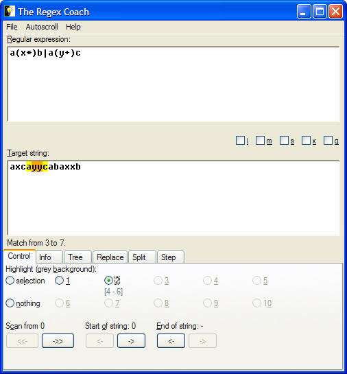

The orange background now emphasizes what would be Perl's
$2 variable after this match. The highlight message below the button you've just
pressed shows the position of the orange area within the target
string - it is two characters long and ranges from position 4 to position 6.
Note that only the first two register highlight buttons are enabled because our regular expression only has two register groups.